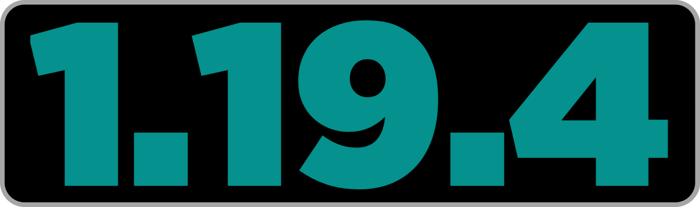

<!--
MomentariyModder Website 7.0.0 by MomentariyModder
The source code is available on GitHub!
-->

<!DOCTYPE html>
<html lang="en">
<head>
  <link rel="icon" href="../../img/themes/active/favicon.png">
  <title>Compatible mods | Created Music Discs | Project | MomentariyModder</title>
  <meta name="viewport" content="width=device-width, initial-scale=1, maximum-scale=1" />
  <meta name="title" content="Compatible mods | Created Music Discs | Project | MomentariyModder">
  <meta name="description" content="Welcome to my website! I am MomentariyModder, or as my friends and acquaintances often call me, Modder. I'm 20 years old, and I'm from Belarus (a small country in Europe bordering Russia and Ukraine). I also like to create almost any content for Minecraft, that is: mods, maps, resource packs, servers.">
  <meta name="keywords" content="Minecraft, Mods, MomentariyModder">
  <meta name="theme-color" content="#4bb4f1">


  <script src="https://code.jquery.com/jquery-3.3.1.min.js"></script>
  <script src="https://cdn.jsdelivr.net/npm/handlebars@latest/dist/handlebars.js"></script>
  <script src="https://mcapi.us/scripts/minecraft.min.js"></script>
  <script src="../../js/main.js"></script>
  <script src="../../config.js"></script>
  <script src="../../js/lightbox.min.js"></script>
  <script src="https://cdn.jsdelivr.net/npm/@widgetbot/crate@3" async defer>
  new Crate({
    server: '696094539823448085',
    channel: '1156033421940891688'
  })
  </script>
  
  <script>tosAgreed = true</script>
 
  <link rel="stylesheet" href="https://cdnjs.cloudflare.com/ajax/libs/font-awesome/6.7.1/css/all.min.css"/>
  <link rel="stylesheet" href="../../css/style.css">
  <link rel="stylesheet" href="../../css/table.css">
  <link rel="stylesheet" href="../../config.css">
  <link href="../../css/lightbox.css" rel="stylesheet" media="all">

</head>


<body>

  <div id="target"></div>

  <script id="template" type="text/x-handlebars-template">

  <header>
    <div class="hero" id="hero">
      <a href="#!"><h1 style="padding-top: 3%;"></h1></a>
    <p> </p>
    <div class="news-card" align="center">
	  <a href="../../" class="btn"><i class="fa-solid fa-house"></i> Home</a>
      <a href="../../wiki" class="btn"><i class="fa-solid fa-book"></i> Wiki</a>
	  <a href="#links" class="btn"><i class="fa-solid fa-share"></i> Links</a>
    </div>
	<p> </p>
	</div>
  </header>
  
  <section class="dark" id="projects">
	<h1><i class="fa-solid fa-list-ul"></i> Project</h1>
	<div id="news">
    <div class="news-card">
      <p align="center" style="color:#fff">
	    <a>Mod</a>
	    <strong></strong>
	    <a href="../../img/projects/created_music_discs/banner_16x9.png" data-lightbox="roadtrip"></a>
	  </p>
    </div>
	<p> </p>
    <div class="news-card">
	  <p align="center" style="color:#fff">
		
		
      </p>
	  <p align="center" style="color:#fff">
		
		
		<a href="applications"></a>
      </p>
	  <p align="center" style="color:#fff">
		
		
		
		
      </p>
	  <p align="center" style="color:#fff">
	    
	    
	    
		
		
        
	    
	  </p>
    </div>
	<p> </p>
	<div class="news-card">	
      <p>
	  <a href="../../projects/created-music-discs/index" class="btn"><i class="fa-solid fa-book-open"></i> Description</a>
	  <a href="../../projects/created-music-discs/compatible-mods" class="btn"><i class="fa-solid fa-list-ul"></i> Compatible mods</a>
	  <a href="../../projects/created-music-discs/incompatible-mods" class="btn"><i class="fa-solid fa-list-ul"></i> Incompatible mods</a>
	  <a href="../../projects/created-music-discs/changelog" class="btn"><i class="fa-solid fa-bars-staggered"></i> Changelog</a>
	  <a href="../../projects/created-music-discs/download" class="btn"><i class="fa-solid fa-download"></i> Download</a>
	  </p>
    </div>
	<p> </p>
	<div class="news-card">	
    <strong>Compatible mods</strong>
	<br>
    <table align="center">
	<tbody>
    <tr>
        <td><h4 class="btn-table-name">Name</h4></td>
		<td><h4 class="btn-table-name">Download</h4></td>
    </tr>
	<tr>
        <td><p class="btn-table-game"><b>Abyssal Descent (by Herobrine011840)</b></p></td>
		<td><a class="btn-table-name-cf" href="https://www.curseforge.com/minecraft/mc-mods/abyssal-descent"><b>NeoForge/Forge</b></a></td>
    </tr>
	<tr>
        <td><p class="btn-table-game"><b>Advent Of Ascension (by Scimiguy)</b></p></td>
		<td><a class="btn-table-name-mr" href="https://modrinth.com/mod/adventofascension"><b>NeoForge/Forge</b></a></td>
    </tr>
	<tr>
        <td><p class="btn-table-game"><b>Aether: Lost Content Addon (by ModdingLegacy)</b></p></td>
		<td><a class="btn-table-name-mr" href="https://modrinth.com/mod/aether-lost-content"><b>NeoForge/Forge</b></a></td>
    </tr>
	<tr>
        <td><p class="btn-table-game"><b>Afflasi Ruins (by Herobrine011840)</b></p></td>
		<td><a class="btn-table-name-cf" href="https://www.curseforge.com/minecraft/mc-mods/afflasi-ruins"><b>NeoForge/Forge</b></a></td>
    </tr>
	<tr>
        <td><p class="btn-table-game"><b>Alex's Caves (by sbom_xela)</b></p></td>
		<td><a class="btn-table-name-mr" href="https://modrinth.com/mod/alexs-caves"><b>NeoForge/Forge</b></a></td>
    </tr>
	<tr>
        <td><p class="btn-table-game"><b>Alex's Caves: Adventure (by Bluezers)</b></p></td>
		<td><a class="btn-table-name-mr" href="https://modrinth.com/mod/alexs-caves-adventure"><b>NeoForge/Forge</b></a></td>
    </tr>
	<tr>
        <td><p class="btn-table-game"><b>Alex's Caves: Stuff & Torpedoes (by Furti_Two)</b></p></td>
		<td><a class="btn-table-name-mr" href="https://modrinth.com/mod/alexscaves-torpedoes"><b>NeoForge/Forge</b></a></td>
    </tr>
	<tr>
        <td><p class="btn-table-game"><b>Alex's Mobs (by sbom_xela)</b></p></td>
		<td><a class="btn-table-name-mr" href="https://modrinth.com/mod/alexs-mobs"><b>NeoForge/Forge</b></a></td>
    </tr>
	<tr>
        <td><p class="btn-table-game"><b>Ancient Elements (by HolySeyhan)</b></p></td>
		<td><a class="btn-table-name-cf" href="https://www.curseforge.com/minecraft/mc-mods/ancient-elements"><b>NeoForge/Forge</b></a></td>
    </tr>
	<tr>
        <td><p class="btn-table-game"><b>Aquamirae (by Obscuria)</b></p></td>
		<td><a class="btn-table-name-mr" href="https://modrinth.com/mod/aquamirae"><b>NeoForge/Forge/Fabric/Quilt</b></a></td>
    </tr>
	<tr>
        <td><p class="btn-table-game"><b>Arcanmira (by Herobrine011840)</b></p></td>
		<td><a class="btn-table-name-cf" href="https://www.curseforge.com/minecraft/mc-mods/arcanmira"><b>NeoForge/Forge</b></a></td>
    </tr>
	<tr>
        <td><p class="btn-table-game"><b>Ars Nouveau (by baileyholl2)</b></p></td>
		<td><a class="btn-table-name-mr" href="https://modrinth.com/mod/ars-nouveau"><b>NeoForge/Forge</b></a></td>
    </tr>
	<tr>
        <td><p class="btn-table-game"><b>Balmy food (by Kvadrat_Q)</b></p></td>
		<td><a class="btn-table-name-mr" href="https://modrinth.com/mod/balmy-food"><b>NeoForge/Forge</b></a></td>
    </tr>
	<tr>
        <td><p class="btn-table-game"><b>Berry Good (by TeamAbnormals)</b></p></td>
		<td><a class="btn-table-name-mr" href="https://modrinth.com/mod/berry-good"><b>NeoForge/Forge</b></a></td>
    </tr>
	<tr>
        <td><p class="btn-table-game"><b>BetterEnd (by Quiqueck)</b></p></td>
		<td><a class="btn-table-name-mr" href="https://modrinth.com/mod/betterend"><b>Fabric/Quilt</b></a></td>
    </tr>
	<tr>
        <td><p class="btn-table-game"><b>Biomes O' Plenty (by Glitchfiend)</b></p></td>
		<td><a class="btn-table-name-mr" href="https://modrinth.com/mod/biomes-o-plenty"><b>NeoForge/Forge</b></a></td>
    </tr>
	<tr>
        <td><p class="btn-table-game"><b>Blood Magic (by WayofTime)</b></p></td>
		<td><a class="btn-table-name-mr" href="https://modrinth.com/mod/blood-magic"><b>NeoForge/Forge</b></a></td>
    </tr>
	<tr>
        <td><p class="btn-table-game"><b>Blue Skies (by ModdingLegacy)</b></p></td>
		<td><a class="btn-table-name-mr" href="https://modrinth.com/mod/blue-skies"><b>NeoForge/Forge</b></a></td>
    </tr>
	<tr>
        <td><p class="btn-table-game"><b>Born in Chaos (by mongoose_artist)</b></p></td>
		<td><a class="btn-table-name-cf" href="https://www.curseforge.com/minecraft/mc-mods/born-in-chaos"><b>NeoForge/Forge</b></a></td>
    </tr>
	<tr>
        <td><p class="btn-table-game"><b>Botania (by Vazkii/Violet Moon)</b></p></td>
		<td><a class="btn-table-name-mr" href="https://modrinth.com/mod/botania"><b>NeoForge/Forge/Fabric/Quilt</b></a></td>
    </tr>
	<tr>
        <td><p class="btn-table-game"><b>Broken Discs (by Sweetygamer)</b></p></td>
		<td><a class="btn-table-name-mr" href="https://modrinth.com/mod/broken_discs"><b>Forge</b></a></td>
    </tr>
	<tr>
        <td><p class="btn-table-game"><b>Burrowers (by jocosero)</b></p></td>
		<td><a class="btn-table-name-mr" href="https://modrinth.com/mod/burrowers"><b>NeoForge/Forge</b></a></td>
    </tr>
	<tr>
        <td><p class="btn-table-game"><b>Bygone Nether (by izofar)</b></p></td>
		<td><a class="btn-table-name-mr" href="https://modrinth.com/mod/bygone-nether"><b>NeoForge/Forge</b></a> <a class="btn-table-name-cf" href="https://www.curseforge.com/minecraft/mc-mods/bygone-nether-fabric"><b>Fabric</b></a></td>
    </tr>
	<tr>
        <td><p class="btn-table-game"><b>Call From The Depths (by RN6)</b></p></td>
		<td><a class="btn-table-name-mr" href="https://modrinth.com/mod/call-from-the-depths"><b>NeoForge/Forge</b></a></td>
    </tr>
	<tr>
        <td><p class="btn-table-game"><b>Call of Yucatán (by Unusual_Squad)*</b></p></td>
		<td><a class="btn-table-name-mr" href="https://modrinth.com/mod/call-of-yucutan"><b>NeoForge/Forge</b></a></td>
    </tr>
	<tr>
        <td><p class="btn-table-game"><b>Caverns & Chasms (by Team Abnormals)</b></p></td>
		<td><a class="btn-table-name-mr" href="https://modrinth.com/mod/caverns-and-chasms"><b>NeoForge/Forge</b></a></td>
    </tr>
	<tr>
        <td><p class="btn-table-game"><b>Concoction! (by Sebsish, woofyboo)</b></p></td>
		<td><a class="btn-table-name-mr" href="https://modrinth.com/mod/concoction!"><b>NeoForge</b></a></td>
    </tr>
	<tr>
        <td><p class="btn-table-game"><b>Confluence: Otherworld (by westernat233)</b></p></td>
		<td><a class="btn-table-name-mr" href="https://modrinth.com/mod/confluence"><b>NeoForge</b></a></td>
    </tr>
	<tr>
        <td><p class="btn-table-game"><b>Critters n' Crawlers (by Fae_stricken_fool/endcollector)</b></p></td>
		<td><a class="btn-table-name-mr" href="https://modrinth.com/mod/critters-n-crawlers"><b>NeoForge/Forge</b></a></td>
    </tr>
	<tr>
        <td><p class="btn-table-game"><b>Deep Aether (by TeamRazor)</b></p></td>
		<td><a class="btn-table-name-mr" href="https://modrinth.com/mod/deep-aether"><b>NeoForge/Forge</b></a></td>
    </tr>
	<tr>
        <td><p class="btn-table-game"><b>Deep Dark: Regrowth (by clorobored)</b></p></td>
		<td><a class="btn-table-name-cf" href="https://www.curseforge.com/minecraft/mc-mods/deep-dark-regrowth"><b>NeoForge/Forge</b></a></td>
    </tr>
	<tr>
        <td><p class="btn-table-game"><b>Desolation (by raltsmc)</b></p></td>
		<td><a class="btn-table-name-mr" href="https://modrinth.com/mod/desolation"><b>Fabric/Quilt</b></a></td>
    </tr>
	<tr>
        <td><p class="btn-table-game"><b>Distorted Discs (by BBoldt)*</b></p></td>
		<td><a class="btn-table-name-mr" href="https://modrinth.com/mod/distorteddiscs"><b>NeoForge/Forge/Fabric/Quilt</b></a></td>
    </tr>
	<tr>
        <td><p class="btn-table-game"><b>DivineRPG (by velocityraptor-real)</b></p></td>
		<td><a class="btn-table-name-mr" href="https://modrinth.com/mod/divinerpg"><b>NeoForge/Forge</b></a></td>
    </tr>
	<tr>
        <td><p class="btn-table-game"><b>Doctor Who: Weeping Angels (by Jeryn)</b></p></td>
		<td><a class="btn-table-name-mr" href="https://modrinth.com/mod/weeping-angels"><b>NeoForge/Forge</b></a></td>
    </tr>
	<tr>
        <td><p class="btn-table-game"><b>Doggy Talents Next (by DashieDev)</b></p></td>
		<td><a class="btn-table-name-mr" href="https://modrinth.com/mod/doggy-talents-next"><b>NeoForge/Forge</b></a></td>
    </tr>
	<tr>
        <td><p class="btn-table-game"><b>Doom & Gloom (by Team Galena)</b></p></td>
		<td><a class="btn-table-name-mr" href="https://modrinth.com/mod/doom-gloom"><b>NeoForge/Forge</b></a></td>
    </tr>
	<tr>
        <td><p class="btn-table-game"><b>Ecologics (by SameDifferent)</b></p></td>
		<td><a class="btn-table-name-cf" href="https://www.curseforge.com/minecraft/mc-mods/ecologics"><b>NeoForge/Forge/Fabric/Quilt</b></a></td>
    </tr>
	<tr>
        <td><p class="btn-table-game"><b>Eidolon : Repraised (by Alexth99)</b></p></td>
		<td><a class="btn-table-name-mr" href="https://modrinth.com/mod/eidolonrepraised"><b>NeoForge/Forge</b></a></td>
    </tr>
	<tr>
        <td><p class="btn-table-game"><b>Eidolon Rebrewed (by EndangeredNayla)</b></p></td>
		<td><a class="btn-table-name-mr" href="https://modrinth.com/mod/eidolon-rebrewed"><b>Forge</b></a></td>
    </tr>
	<tr>
        <td><p class="btn-table-game"><b>Eldritch Grotto (by Herobrine011840)</b></p></td>
		<td><a class="btn-table-name-cf" href="https://www.curseforge.com/minecraft/mc-mods/eldritch-grotto"><b>NeoForge/Forge</b></a></td>
    </tr>
	<tr>
        <td><p class="btn-table-game"><b>Electro Simplicity (by sleppe3/SleppiYT)</b></p></td>
		<td><a class="btn-table-name-mr" href="https://modrinth.com/mod/mic"><b>NeoForge/Forge</b></a></td>
    </tr>
	<tr>
        <td><p class="btn-table-game"><b>Embers Rekindled (by RCXcrafter)</b></p></td>
		<td><a class="btn-table-name-mr" href="https://modrinth.com/mod/embers"><b>NeoForge/Forge</b></a></td>
    </tr>
	<tr>
        <td><p class="btn-table-game"><b>Endless Journey (by Neeerd/ItzDave)</b></p></td>
		<td><a class="btn-table-name-cf" href="https://www.curseforge.com/minecraft/mc-mods/endless-journey"><b>NeoForge/Forge</b></a></td>
    </tr>
	<tr>
        <td><p class="btn-table-game"><b>Enlightend (by lixir)</b></p></td>
		<td><a class="btn-table-name-mr" href="https://modrinth.com/mod/enlightend"><b>NeoForge/Forge</b></a></td>
    </tr>
	<tr>
        <td><p class="btn-table-game"><b>Environmental (by TeamAbnormals)</b></p></td>
		<td><a class="btn-table-name-mr" href="https://modrinth.com/mod/environmental"><b>Forge</b></a></td>
    </tr>
	<tr>
        <td><p class="btn-table-game"><b>Eternal Starlight (by LeoMinecraftModding)</b></p></td>
		<td><a class="btn-table-name-mr" href="https://modrinth.com/mod/eternal-starlight"><b>NeoForge</b></a></td>
    </tr>
	<tr>
        <td><p class="btn-table-game"><b>Eternal Tales (by Unknown_Raccoon)</b></p></td>
		<td><a class="btn-table-name-mr" href="https://modrinth.com/mod/eternal-tales"><b>NeoForge/Forge</b></a></td>
    </tr>
	<tr>
        <td><p class="btn-table-game"><b>FNAF: Management Wanted (by OVDRStudios)</b></p></td>
		<td><a class="btn-table-name-mr" href="https://modrinth.com/mod/management-wanted"><b>NeoForge/Forge</b></a></td>
    </tr>
	<tr>
        <td><p class="btn-table-game"><b>Fish and Tails (by fusionstudiomc)</b></p></td>
		<td><a class="btn-table-name-cf" href="https://www.curseforge.com/minecraft/mc-mods/fins-and-tails"><b>Forge</b></a></td>
    </tr>
	<tr>
        <td><p class="btn-table-game"><b>Five Nights At Freddy's Security Breach Remastered (by Aysome122)</b></p></td>
		<td><a class="btn-table-name-mr" href="https://modrinth.com/mod/five-nights-at-freddys-security-breach-remastered"><b>NeoForge/Forge</b></a></td>
    </tr>
	<tr>
        <td><p class="btn-table-game"><b>Fluffy Fur (by MaxBogomol)</b></p></td>
		<td><a class="btn-table-name-mr" href="https://modrinth.com/mod/fluffy-fur"><b>NeoForge/Forge</b></a></td>
    </tr>
	<tr>
        <td><p class="btn-table-game"><b>Forest X Reborn (by MagicalAlexey)</b></p></td>
		<td><a class="btn-table-name-mr" href="https://modrinth.com/mod/forest-x-reborn"><b>NeoForge/Forge</b></a></td>
    </tr>
	<tr>
        <td><p class="btn-table-game"><b>Fuze's Relics (by Furti_Two)</b></p></td>
		<td><a class="btn-table-name-cf" href="https://www.curseforge.com/minecraft/mc-mods/fuzes-relics"><b>NeoForge/Forge</b></a></td>
    </tr>
	<tr>
        <td><p class="btn-table-game"><b>Gloom Caves (by Herobrine011840)</b></p></td>
		<td><a class="btn-table-name-cf" href="https://www.curseforge.com/minecraft/mc-mods/gloom-caves"><b>NeoForge/Forge</b></a></td>
    </tr>
	<tr>
        <td><p class="btn-table-game"><b>Herobrine011840's Cave Biomes (by Herobrine011840)</b></p></td>
		<td><a class="btn-table-name-cf" href="https://www.curseforge.com/minecraft/mc-mods/herobrine011840s-cave-biomes"><b>NeoForge/Forge</b></a></td>
    </tr>
	<tr>
        <td><p class="btn-table-game"><b>Illusion Onslaught (by HolySeyhan)</b></p></td>
		<td><a class="btn-table-name-cf" href="https://www.curseforge.com/minecraft/mc-mods/illusion-onslaught"><b>NeoForge/Forge</b></a></td>
    </tr>
	<tr>
        <td><p class="btn-table-game"><b>Infernal Expansion (by InfernalStudios)</b></p></td>
		<td><a class="btn-table-name-mr" href="https://modrinth.com/mod/infernal-expansion"><b>Forge</b></a></td>
    </tr>
	<tr>
        <td><p class="btn-table-game"><b>Into the Woods (by Herobrine011840)</b></p></td>
		<td><a class="btn-table-name-cf" href="https://www.curseforge.com/minecraft/mc-mods/into-the-woods"><b>NeoForge/Forge</b></a></td>
    </tr>
    <tr>
        <td><p class="btn-table-game"><b>Iron's Spells 'n Spellbooks (by Iron431)</b></p></td>
		<td><a class="btn-table-name-mr" href="https://modrinth.com/mod/irons-spells-n-spellbooks"><b>NeoForge/Forge</b></a></td>
    </tr>
	<tr>
        <td><p class="btn-table-game"><b>It Takes a Pillage (by izofar)</b></p></td>
		<td><a class="btn-table-name-mr" href="https://modrinth.com/mod/it-takes-a-pillage"><b>NeoForge/Forge</b></a></td>
    </tr>
	<tr>
        <td><p class="btn-table-game"><b>Jaden's Nether Expansion (by ThatJadenXgamer)</b></p></td>
		<td><a class="btn-table-name-mr" href="https://modrinth.com/mod/jadens-nether-expansion"><b>NeoForge/Forge</b></a></td>
    </tr>
	<tr>
        <td><p class="btn-table-game"><b>Keepers of the Stones (by Environment_Studios)</b></p></td>
		<td><a class="btn-table-name-mr" href="https://modrinth.com/mod/keepers-of-the-stones"><b>NeoForge/Forge</b></a></td>
    </tr>
	<tr>
        <td><p class="btn-table-game"><b>Keepers of the Stones II (by Environment_Studios)</b></p></td>
		<td><a class="btn-table-name-mr" href="https://modrinth.com/mod/keepers-of-the-stones-2"><b>NeoForge/Forge</b></a></td>
    </tr>
	<tr>
        <td><p class="btn-table-game"><b>LUMINOUS (by RipleysMods)</b></p></td>
		<td><a class="btn-table-name-mr" href="https://modrinth.com/mod/the-luminous-mod"><b>NeoForge/Forge</b></a></td>
    </tr>
	<tr>
        <td><p class="btn-table-game"><b>LUMINOUS: BEASTS (by RipleysMods)</b></p></td>
		<td><a class="btn-table-name-mr" href="https://modrinth.com/mod/luminous-beasts"><b>NeoForge/Forge</b></a></td>
    </tr>
	<tr>
        <td><p class="btn-table-game"><b>LUMINOUS: NETHER (by RipleysMods)</b></p></td>
		<td><a class="btn-table-name-mr" href="https://modrinth.com/mod/luminous-nether"><b>NeoForge/Forge</b></a></td>
    </tr>
	<tr>
        <td><p class="btn-table-game"><b>L_Ender's Cataclysm (by mcl_ender)</b></p></td>
		<td><a class="btn-table-name-mr" href="https://modrinth.com/mod/l_enders-cataclysm"><b>NeoForge/Forge</b></a></td>
    </tr>
	<tr>
        <td><p class="btn-table-game"><b>Legacies and Legends (by rebel0459)</b></p></td>
		<td><a class="btn-table-name-mr" href="https://modrinth.com/mod/legacies-and-legends"><b>Fabric/Quilt</b></a></td>
    </tr>
	<tr>
        <td><p class="btn-table-game"><b>Legacy Revived (by pikminboZZ)</b></p></td>
		<td><a class="btn-table-name-mr" href="https://modrinth.com/mod/legacy-revived"><b>NeoForge/Forge</b></a></td>
    </tr>
	<tr>
        <td><p class="btn-table-game"><b>Let's Do: Beachparty (by satisfy)</b></p></td>
		<td><a class="btn-table-name-mr" href="https://modrinth.com/mod/lets-do-beachparty"><b>NeoForge/Forge/Fabric/Quilt</b></a></td>
    </tr>
	<tr>
        <td><p class="btn-table-game"><b>Mana and Artifice (by AWildCanadianEh)</b></p></td>
		<td><a class="btn-table-name-mr" href="https://modrinth.com/mod/mana-and-artifice"><b>NeoForge/Forge</b></a></td>
    </tr>
	<tr>
        <td><p class="btn-table-game"><b>Mario PowerUps (by bo_bo0)</b></p></td>
		<td><a class="btn-table-name-mr" href="https://modrinth.com/mod/mario-powerups"><b>NeoForge/Forge</b></a></td>
    </tr>
	<tr>
        <td><p class="btn-table-game"><b>Mowzie's Mobs (by bobmowzie)</b></p></td>
		<td><a class="btn-table-name-cf" href="https://www.curseforge.com/minecraft/mc-mods/mowzies-mobs"><b>NeoForge/Forge</b></a></td>
    </tr>
	<tr>
        <td><p class="btn-table-game"><b>Neapolitan (by TeamAbnormals)</b></p></td>
		<td><a class="btn-table-name-mr" href="https://modrinth.com/mod/neapolitan"><b>NeoForge/Forge</b></a></td>
    </tr>
	<tr>
        <td><p class="btn-table-game"><b>Nether Dungeons (by Team Durt)</b></p></td>
		<td><a class="btn-table-name-mr" href="https://modrinth.com/mod/nether-dungeons"><b>NeoForge/Forge</b></a></td>
    </tr>
	<tr>
        <td><p class="btn-table-game"><b>Nether's Exoticism (by Unusual_Squad)</b></p></td>
		<td><a class="btn-table-name-mr" href="https://modrinth.com/mod/nethers-exoticism"><b>NeoForge/Forge</b></a></td>
    </tr>
	<tr>
        <td><p class="btn-table-game"><b>New End Stuff (by PottBlach Creators)</b></p></td>
		<td><a class="btn-table-name-mr" href="https://modrinth.com/mod/new-end-stuff"><b>NeoForge</b></a></td>
    </tr>
	<tr>
        <td><p class="btn-table-game"><b>Oh The Biomes We've Gone (by Potion Studios)</b></p></td>
		<td><a class="btn-table-name-mr" href="https://modrinth.com/mod/oh-the-biomes-weve-gone"><b>NeoForge/Forge</b></a></td>
    </tr>
	<tr>
        <td><p class="btn-table-game"><b>Oreganized (by Team Galena)</b></p></td>
		<td><a class="btn-table-name-mr" href="https://modrinth.com/mod/oreganized"><b>NeoForge/Forge</b></a></td>
    </tr>
	<tr>
        <td><p class="btn-table-game"><b>Project:Buildinatural (by DanielMarionette)</b></p></td>
		<td><a class="btn-table-name-mr" href="https://modrinth.com/mod/project-buildinatural"><b>NeoForge/Forge</b></a></td>
    </tr>
	<tr>
        <td><p class="btn-table-game"><b>Quark (by Vazkii/Violet Moon)</b></p></td>
		<td><a class="btn-table-name-mr" href="https://modrinth.com/mod/quark"><b>NeoForge/Forge</b></a></td>
    </tr>
	<tr>
        <td><p class="btn-table-game"><b>Rats (by sbom_xela)</b></p></td>
		<td><a class="btn-table-name-mr" href="https://modrinth.com/mod/rats"><b>NeoForge/Forge</b></a></td>
    </tr>
	<tr>
        <td><p class="btn-table-game"><b>RedWolf's Music Expansion (by Sweetygamer)*</b></p></td>
		<td><a class="btn-table-name-mr" href="https://modrinth.com/mod/redwolf-music-expansion"><b>Forge</b></a></td>
    </tr>
	<tr>
        <td><p class="btn-table-game"><b>Rediscovered (by ModdingLegacy)</b></p></td>
		<td><a class="btn-table-name-mr" href="https://modrinth.com/mod/rediscovered"><b>NeoForge/Forge</b></a></td>
    </tr>
	<tr>
        <td><p class="btn-table-game"><b>Ribbits: Croaks (by Jonahanoj)</b></p></td>
		<td><a class="btn-table-name-mr" href="https://modrinth.com/mod/ribbits-croaks"><b>NeoForge/Forge</b></a></td>
    </tr>
	<tr>
        <td><p class="btn-table-game"><b>Rise of the Gecko King (by GeckoKingYT)</b></p></td>
		<td><a class="btn-table-name-mr" href="https://modrinth.com/mod/rise-of-the-gecko-king"><b>NeoForge/Forge</b></a></td>
    </tr>
	<tr>
        <td><p class="btn-table-game"><b>Seeds (by Unusual_Squad)</b></p></td>
		<td><a class="btn-table-name-mr" href="https://modrinth.com/mod/seeds"><b>NeoForge/Forge</b></a></td>
    </tr>
	<tr>
        <td><p class="btn-table-game"><b>Simple Farming (by enemeez1)</b></p></td>
		<td><a class="btn-table-name-cf" href="https://www.curseforge.com/minecraft/mc-mods/simple-farming"><b>NeoForge/Forge</b></a></td>
    </tr>
	<tr>
        <td><p class="btn-table-game"><b>Skyland (by Neeerd/ItzDave)</b></p></td>
		<td><a class="btn-table-name-mr" href="https://modrinth.com/mod/skyland"><b>NeoForge/Forge</b></a></td>
    </tr>
	<tr>
        <td><p class="btn-table-game"><b>Slipcraft (by owl7892)</b></p></td>
		<td><a class="btn-table-name-cf" href="https://www.curseforge.com/minecraft/mc-mods/slipcraft"><b>NeoForge/Forge</b></a></td>
    </tr>
	<tr>
        <td><p class="btn-table-game"><b>SoniCraft (by EnderPreston)</b></p></td>
		<td><a class="btn-table-name-mr" href="https://modrinth.com/mod/sonicraft"><b>NeoForge/Forge</b></a></td>
    </tr>
	<tr>
        <td><p class="btn-table-game"><b>Sons Of Sins: Wounds of Chaos (by Furti_Two)</b></p></td>
		<td><a class="btn-table-name-mr" href="https://modrinth.com/mod/sons-of-sins-wounds-of-chaos"><b>NeoForge/Forge</b></a></td>
    </tr>
	<tr>
        <td><p class="btn-table-game"><b>Spawn. (by ninnih_)</b></p></td>
		<td><a class="btn-table-name-mr" href="https://modrinth.com/mod/spawn-mod"><b>NeoForge/Forge/Fabric/Quilt</b></a></td>
    </tr>
	<tr>
        <td><p class="btn-table-game"><b>Spelunking Bags (by Unusual_Squad)</b></p></td>
		<td><a class="btn-table-name-mr" href="https://modrinth.com/mod/spelunking-bags"><b>Forge</b></a></td>
    </tr>
	<tr>
        <td><p class="btn-table-game"><b>Sully's Mod (by GoesBySully)</b></p></td>
		<td><a class="btn-table-name-mr" href="https://modrinth.com/mod/sullysmod"><b>NeoForge/Forge</b></a></td>
    </tr>
	<tr>
        <td><p class="btn-table-game"><b>Supplementaries (by MehVahdJukaar)</b></p></td>
		<td><a class="btn-table-name-mr" href="https://modrinth.com/mod/supplementaries"><b>NeoForge/Forge</b></a></td>
    </tr>
	<tr>
        <td><p class="btn-table-game"><b>Sweety's Archaeology (by Sweetygamer2)</b></p></td>
		<td><a class="btn-table-name-mr" href="https://modrinth.com/mod/sweety-archaeology"><b>NeoForge/Forge</b></a></td>
    </tr>
	<tr>
        <td><p class="btn-table-game"><b>The Aether (by TheAetherTeam)</b></p></td>
		<td><a class="btn-table-name-mr" href="https://modrinth.com/mod/aether"><b>NeoForge/Forge</b></a></td>
    </tr>
	<tr>
        <td><p class="btn-table-game"><b>The Aether: Redux (by Zepalesque)</b></p></td>
		<td><a class="btn-table-name-mr" href="https://modrinth.com/mod/the-aether-redux"><b>NeoForge/Forge</b></a></td>
    </tr>
	<tr>
        <td><p class="btn-table-game"><b>The Broken Script (by wendigodrip)</b></p></td>
		<td><a class="btn-table-name-mr" href="https://modrinth.com/mod/the-broken-script"><b>NeoForge/Forge</b></a></td>
    </tr>
	<tr>
        <td><p class="btn-table-game"><b>The Bumblezone (by telepathicgrunt)</b></p></td>
		<td><a class="btn-table-name-mr" href="https://modrinth.com/mod/the-bumblezone"><b>NeoForge/Forge</a> <a class="btn-table-name-mr" href="https://modrinth.com/mod/the-bumblezone-fabric"><b>Fabric/Quilt</b></a></td>
    </tr>
	<tr>
        <td><p class="btn-table-game"><b>The Conjurer (by ModdingLegacy)</b></p></td>
		<td><a class="btn-table-name-mr" href="https://modrinth.com/mod/the-conjurer"><b>NeoForge/Forge</b></a></td>
    </tr>
	<tr>
        <td><p class="btn-table-game"><b>The Deep Void (by Mortius)</b></p></td>
		<td><a class="btn-table-name-mr" href="https://modrinth.com/mod/(mortius)-the-deep-void"><b>NeoForge/Forge</b></a></td>
    </tr>
	<tr>
        <td><p class="btn-table-game"><b>The Endergetic Expansion (by TeamAbnormals)</b></p></td>
		<td><a class="btn-table-name-mr" href="https://modrinth.com/mod/endergetic"><b>Forge</b></a></td>
    </tr>
	<tr>
        <td><p class="btn-table-game"><b>The Graveyard (by finallion_13)</b></p></td>
		<td><a class="btn-table-name-mr" href="https://modrinth.com/mod/the-graveyard-forge"><b>NeoForge/Forge</a> <a class="btn-table-name-mr" href="https://modrinth.com/mod/the-graveyard-fabric"><b>Fabric/Quilt</b></a></td>
    </tr>
	<tr>
        <td><p class="btn-table-game"><b>The Graveyard - Resurrected (by Moomba)</b></p></td>
		<td><a class="btn-table-name-mr" href="https://modrinth.com/mod/graveyard"><b>NeoForge</b></a></td>
    </tr>
	<tr>
        <td><p class="btn-table-game"><b>The John Reborn (by AerilonLegacyStudios)</b></p></td>
		<td><a class="btn-table-name-mr" href="https://modrinth.com/mod/john_mod_reborn"><b>NeoForge/Forge</b></a></td>
    </tr>
	<tr>
        <td><p class="btn-table-game"><b>The Legend Of The Dudes (by Isla_Nublar)</b></p></td>
		<td><a class="btn-table-name-mr" href="https://modrinth.com/mod/tlotd"><b>NeoForge/Forge</b></a></td>
    </tr>
	<tr>
        <td><p class="btn-table-game"><b>The Legend of Herobrine (by Alex-MacLean)</b></p></td>
		<td><a class="btn-table-name-mr" href="https://modrinth.com/mod/the-legend-of-herobrine"><b>Fabric/Quilt</b></a></td>
    </tr>
	<tr>
        <td><p class="btn-table-game"><b>The Outer End (by BlueDuckYT)</b></p></td>
		<td><a class="btn-table-name-mr" href="https://modrinth.com/mod/the-outer-end"><b>NeoForge/Forge</b></a></td>
    </tr>
	<tr>
        <td><p class="btn-table-game"><b>The Twilight Forest (by Benimatic)</b></p></td>
		<td><a class="btn-table-name-cf" href="https://www.curseforge.com/minecraft/mc-mods/the-twilight-forest"><b>NeoForge/Forge</b></a></td>
    </tr>
	<tr>
        <td><p class="btn-table-game"><b>The ULTIMATE Festive Mod (by BulbBusinessGaming)</b></p></td>
		<td><a class="btn-table-name-mr" href="https://modrinth.com/mod/the-ultimate-festive-mod"><b>NeoForge</b></a></td>
    </tr>
	<tr>
        <td><p class="btn-table-game"><b>The Undergarden (by Quek04)</b></p></td>
		<td><a class="btn-table-name-mr" href="https://modrinth.com/mod/the-undergarden"><b>NeoForge/Forge</b></a></td>
    </tr>
	<tr>
        <td><p class="btn-table-game"><b>Trials Chambers (by Jusey1z)</b></p></td>
		<td><a class="btn-table-name-mr" href="https://modrinth.com/mod/trials-chambers-backport"><b>NeoForge/Forge</b></a></td>
    </tr>
	<tr>
        <td><p class="btn-table-game"><b>Tropicraft (by Cojomax99)</b></p></td>
		<td><a class="btn-table-name-mr" href="https://modrinth.com/mod/tropicraft"><b>NeoForge/Forge</b></a></td>
    </tr>
	<tr>
        <td><p class="btn-table-game"><b>Unseen World (by sashakyotoz)</b></p></td>
		<td><a class="btn-table-name-cf" href="https://www.curseforge.com/minecraft/mc-mods/unseen_world"><b>NeoForge/Forge</b></a></td>
    </tr>
	<tr>
        <td><p class="btn-table-game"><b>Unusual End (by Unusual_Squad)</b></p></td>
		<td><a class="btn-table-name-mr" href="https://modrinth.com/mod/unusual_end"><b>NeoForge/Forge</b></a></td>
    </tr>
	<tr>
        <td><p class="btn-table-game"><b>Upgrade Aquatic (by TeamAbnormals)</b></p></td>
		<td><a class="btn-table-name-mr" href="https://modrinth.com/mod/upgrade-aquatic"><b>NeoForge/Forge</b></a></td>
    </tr>
	<tr>
        <td><p class="btn-table-game"><b>Valoria (by IriDark)</b></p></td>
		<td><a class="btn-table-name-mr" href="https://modrinth.com/mod/valoria"><b>NeoForge/Forge</b></a></td>
    </tr>
	<tr>
        <td><p class="btn-table-game"><b>Windswept! (by rose__________________)</b></p></td>
		<td><a class="btn-table-name-cf" href="https://www.curseforge.com/minecraft/mc-mods/windsweptmod"><b>Forge</b></a></td>
    </tr>
	<tr>
        <td><p class="btn-table-game"><b>Wizard's Reborn (by MaxBogomol)*</b></p></td>
		<td><a class="btn-table-name-mr" href="https://modrinth.com/mod/wizards-reborn"><b>NeoForge/Forge</b></a></td>
    </tr>
	</tbody>
    </table>
	  <br>
	  * Official support for the mod, made by the mod author himself
	  </p>
    </div>
    </div>
  </section>
  <section class="dark">
	<div class="news-card" align="center">
	<a href="../../projects" class="btn2"><i class="fa-solid fa-arrow-left"></i> Back to Projects</a>
	<a href="../../wiki/created-music-discs" class="btn2"><i class="fa-solid fa-book"></i> Back to Created Music Disc (Wiki)</a>
	</div>
  </section>
  
  <section class="light">
    <h1><i class="fa-solid fa-share"></i> Links</h1>
    <div id="links" align="center">
	  <a href="https://discord.com/invite/9XqgjRd"></a> 
	  <a href="https://t.me/momentariymoddertgk"></a> 
	  <a href="https://twitter.com/momentariymoder"></a>
      <a href="https://bsky.app/profile/momentariymodder.bsky.social"></a>	  
	  <a href="https://www.curseforge.com/members/momentariymodder"></a> 
	  <a href="https://modrinth.com/user/momentariymodder"></a> 
	  <a href="https://github.com/MomentariyModder"></a>
	  <a href="https://patreon.com/momentariymodder"></a>
	  <a href="https://boosty.to/momentariymodder"></a>
	  <a href="https://ko-fi.com/momentariymodder"></a>
	  <a href="https://www.buymeacoffee.com/momentariymodder"></a>
	  <a href="https://www.donationalerts.com/r/momentariymodder"></a>
    </div>
  </section>
  
  
  <footer>
    <a>&copy; {{server_port}} {{server_name}}. All Rights Reserved.</br>{{server_name}} is not affiliated with or endorsed by Mojang Studios or Microsoft<br>{{server_ip}}</a>
	<a></a>
	
  </footer>
  </script>
  <script src="../../js/license.js"></script>
  
</body>
</html>